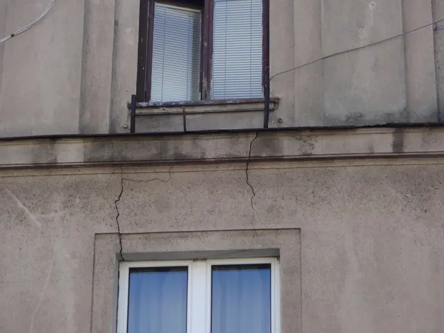
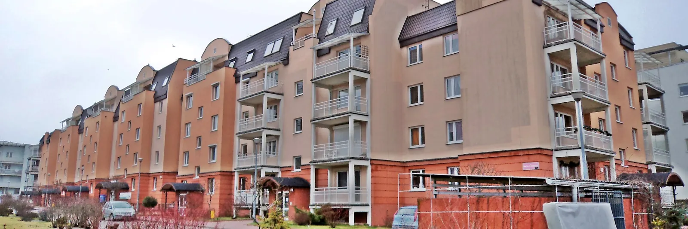
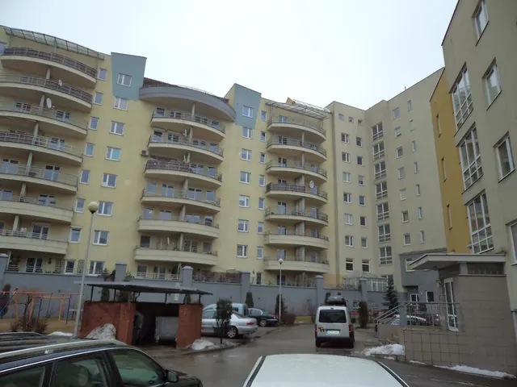
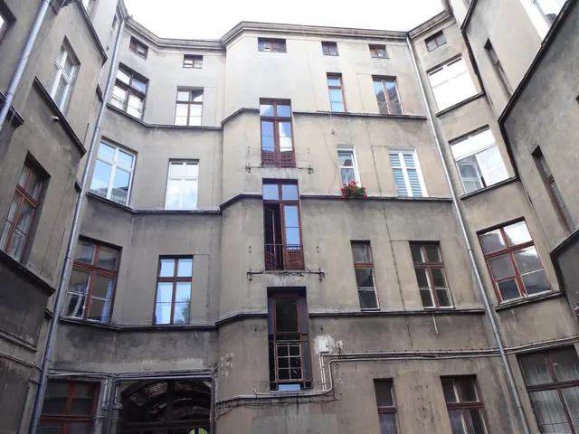
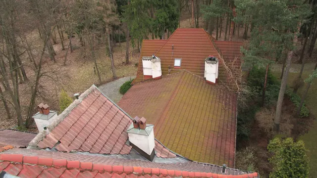
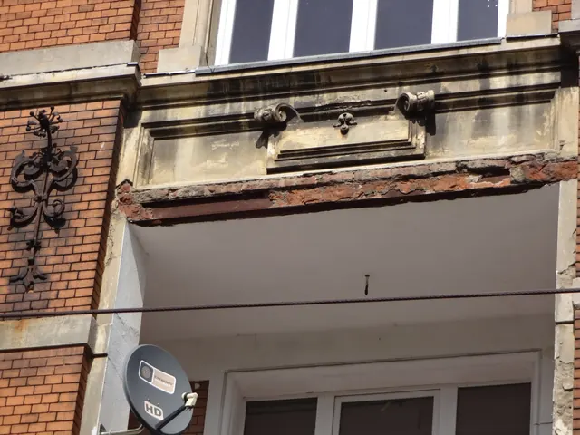
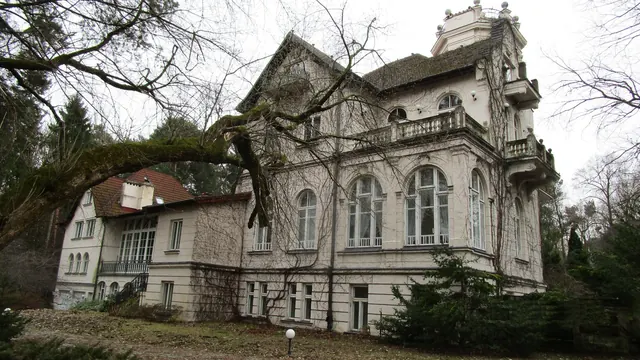
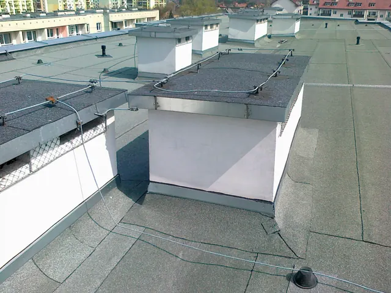
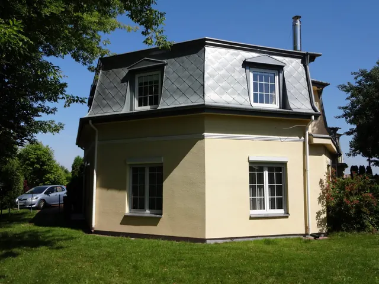
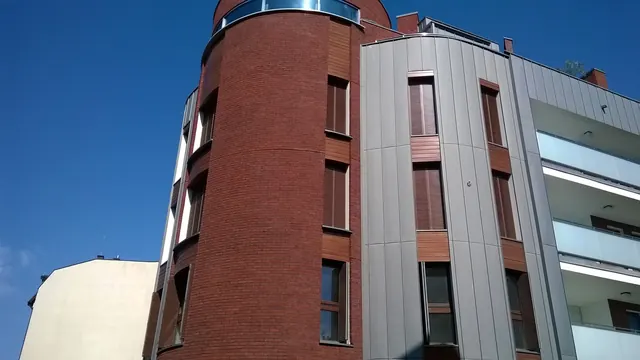

Pomiary i oceny techniczne
Szukamy przyczyn usterek w mieszkaniach i budynkach.
- Badania kamerą termowizyjną
- Pomiary ugięć stropów
- Inwentaryzacje budowlane
- Oceny techniczne mieszkań i budynków

Kontrole roczne, pięcioletnie i półroczne dla wspólnot, zarządców i właścicieli budynków. Protokół z jasną listą prac i kolejnością napraw.
Zapytaj o przeglądBiuro działa od 2009 roku. Członek Łódzkiej Okręgowej Izby Inżynierów Budownictwa.
Zadbany budynek jest bezpieczny i zdrowy, a bieżące naprawy kosztują mniej niż remont po latach zaniedbań. Kontrole okresowe wykonujemy w pełnym zakresie, zgodnie z Prawem budowlanym, dla budynków mieszkalnych, użyteczności publicznej, przemysłowych, magazynowych i handlowych.

Szukamy przyczyn usterek w mieszkaniach i budynkach.
Określamy koszty robót i sprawdzamy ich wykonanie.

Pomagamy każdemu, kto prowadzi budowę lub remont.
Opracowania są krótkie, klarowne i przystępne także dla osób niezwiązanych z budownictwem. Zarząd wspólnoty od razu wie, co zrobić najpierw.
Dobry zarządca wykonuje bieżące naprawy na czas. Koszty są wtedy umiarkowane i rozłożone w latach, a budynek służy dłużej.







Drobne naprawy remontowe i konserwacyjne po przeglądzie: tynki, elewacje, opaski, kominy, klatki schodowe, a zimą sople i śnieg z dachów. Firma Bartłomieja Drymera, Łódź i okolice.
Napisz, jaki to budynek i jakiego przeglądu potrzebujesz. Każdą ofertę kalkulujemy indywidualnie.